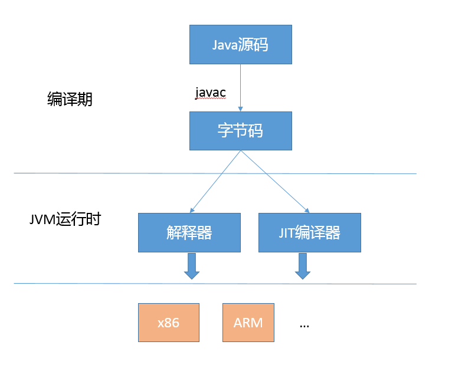

第35讲 | JVM优化Java代码时都做了什么？
我在专栏上一讲介绍了微基准测试和相关的注意事项，其核心就是避免 JVM 运行中对 Java 代码的优化导致失真。所以，系统地理解 Java 代码运行过程，有利于在实践中进行更进一步的调优。
今天我要问你的问题是，JVM 优化 Java 代码时都做了什么？
与以往我来给出典型回答的方式不同，今天我邀请了隔壁专栏《深入拆解 Java 虚拟机》的作者，同样是来自 Oracle 的郑雨迪博士，让他以 JVM 专家的身份去思考并回答这个问题。
来自 JVM 专栏作者郑雨迪博士的回答
JVM 在对代码执行的优化可分为运行时（runtime）优化和即时编译器（JIT）优化。运行时优化主要是解释执行和动态编译通用的一些机制，比如说锁机制（如偏斜锁）、内存分配机制（如 TLAB）等。除此之外，还有一些专门用于优化解释执行效率的，比如说模版解释器、内联缓存（inline cache，用于优化虚方法调用的动态绑定）。
JVM 的即时编译器优化是指将热点代码以方法为单位转换成机器码，直接运行在底层硬件之上。它采用了多种优化方式，包括静态编译器可以使用的如方法内联、逃逸分析，也包括基于程序运行 profile 的投机性优化（speculative/optimistic optimization）。这个怎么理解呢？比如我有一条 instanceof 指令，在编译之前的执行过程中，测试对象的类一直是同一个，那么即时编译器可以假设编译之后的执行过程中还会是这一个类，并且根据这个类直接返回 instanceof 的结果。如果出现了其他类，那么就抛弃这段编译后的机器码，并且切换回解释执行。
当然，JVM 的优化方式仅仅作用在运行应用代码的时候。如果应用代码本身阻塞了，比如说并发时等待另一线程的结果，这就不在 JVM 的优化范畴啦。
考点分析
感谢郑雨迪博士从 JVM 的角度给出的回答。今天这道面试题在专栏里有不少同学问我，也是会在面试时被面试官刨根问底的一个知识点，郑博士的回答已经非常全面和深入啦。
大多数 Java 工程师并不是 JVM 工程师，知识点总归是要落地的，面试官很有可能会从实践的角度探讨，例如，如何在生产实践中，与 JIT 等 JVM 模块进行交互，落实到如何真正进行实际调优。
在今天这一讲，我会从 Java 工程师日常的角度出发，侧重于：
- 从整体去了解 Java 代码编译、执行的过程，目的是对基本机制和流程有个直观的认识，以保证能够理解调优选择背后的逻辑。
- 从生产系统调优的角度，谈谈将 JIT 的知识落实到实际工作中的可能思路。这里包括两部分：如何收集 JIT 相关的信息，以及具体的调优手段。
知识扩展
首先，我们从整体的角度来看看 Java 代码的整个生命周期，你可以参考我提供的示意图。 
我在专栏第 1 讲就已经提到过，Java 通过引入字节码这种中间表达方式，屏蔽了不同硬件的差异，由 JVM 负责完成从字节码到机器码的转化。
通常所说的编译期，是指 javac 等编译器或者相关 API 等将源码转换成为字节码的过程，这个阶段也会进行少量类似常量折叠之类的优化，只要利用反编译工具，就可以直接查看细节。
javac 优化与 JVM 内部优化也存在关联，毕竟它负责了字节码的生成。例如，Java 9 中的字符串拼接，会被 javac 替换成对 StringConcatFactory 的调用，进而为 JVM 进行字符串拼接优化提供了统一的入口。在实际场景中，还可以通过不同的策略选项来干预这个过程。
今天我要讲的重点是JVM 运行时的优化，在通常情况下，编译器和解释器是共同起作用的，具体流程可以参考下面的示意图。

JVM 会根据统计信息，动态决定什么方法被编译，什么方法解释执行，即使是已经编译过的代码，也可能在不同的运行阶段不再是热点，JVM 有必要将这种代码从 Code Cache 中移除出去，毕竟其大小是有限的。
就如郑博士所回答的，解释器和编译器也会进行一些通用优化，例如：
- 锁优化，你可以参考我在专栏第 16 讲提供的解释器运行时的源码分析。
- Intrinsic 机制，或者叫作内建方法，就是针对特别重要的基础方法，JDK 团队直接提供定制的实现，利用汇编或者编译器的中间表达方式编写，然后 JVM 会直接在运行时进行替换。
这么做的理由有很多，例如，不同体系结构的 CPU 在指令等层面存在着差异，定制才能充分发挥出硬件的能力。我们日常使用的典型字符串操作、数组拷贝等基础方法，Hotspot 都提供了内建实现。
而即时编译器（JIT），则是更多优化工作的承担者。JIT 对 Java 编译的基本单元是整个方法，通过对方法调用的计数统计，甄别出热点方法，编译为本地代码。另外一个优化场景，则是最针对所谓热点循环代码，利用通常说的栈上替换技术（OSR，On-Stack Replacement，更加细节请参考R 大的文章-optimisation-in-the-HotSpot-C1-compiler)），如果方法本身的调用频度还不够编译标准，但是内部有大的循环之类，则还是会有进一步优化的价值。
从理论上来看，JIT 可以看作就是基于两个计数器实现，方法计数器和回边计数器提供给 JVM 统计数据，以定位到热点代码。实际中的 JIT 机制要复杂得多，郑博士提到了逃逸分析、循环展开、方法内联等，包括前面提到的 Intrinsic 等通用机制同样会在 JIT 阶段发生。
第二，有哪些手段可以探查这些优化的具体发生情况呢？
专栏中已经陆陆续续介绍了一些，我来简单总结一下并补充部分细节。
- 打印编译发生的细节。
-XX:+PrintCompilation
- 输出更多编译的细节。
-XX:UnlockDiagnosticVMOptions -XX:+LogCompilation -XX:LogFile=<your_file_path>
JVM 会生成一个 xml 形式的文件，另外， LogFile 选项是可选的，不指定则会输出到
hotspot_pid<pid>.log
具体格式可以参考 Ben Evans 提供的JitWatch工具和分析指南。
- 打印内联的发生，可利用下面的诊断选项，也需要明确解锁。
-XX:+PrintInlining
- 如何知晓 Code Cache 的使用状态呢？
很多工具都已经提供了具体的统计信息，比如，JMC、JConsole 之类，我也介绍过使用 NMT 监控其使用。
第三，我们作为应用开发者，有哪些可以触手可及的调优角度和手段呢？
- 调整热点代码门限值
我曾经介绍过 JIT 的默认门限，server 模式默认 10000 次，client 是 1500 次。门限大小也存在着调优的可能，可以使用下面的参数调整；与此同时，该参数还可以变相起到降低预热时间的作用。
-XX:CompileThreshold=N
很多人可能会产生疑问，既然是热点，不是早晚会达到门限次数吗？这个还真未必，因为 JVM 会周期性的对计数的数值进行衰减操作，导致调用计数器永远不能达到门限值，除了可以利用 CompileThreshold 适当调整大小，还有一个办法就是关闭计数器衰减。
-XX:-UseCounterDecay
如果你是利用 debug 版本的 JDK，还可以利用下面的参数进行试验，但是生产版本是不支持这个选项的。
-XX:CounterHalfLifeTime
- 调整 Code Cache 大小
我们知道 JIT 编译的代码是存储在 Code Cache 中的，需要注意的是 Code Cache 是存在大小限制的，而且不会动态调整。这意味着，如果 Code Cache 太小，可能只有一小部分代码可以被 JIT 编译，其他的代码则没有选择，只能解释执行。所以，一个潜在的调优点就是调整其大小限制。
-XX:ReservedCodeCacheSize=<SIZE>
当然，也可以调整其初始大小。
-XX:InitialCodeCacheSize=<SIZE>
注意，在相对较新版本的 Java 中，由于分层编译（Tiered-Compilation）的存在，Code Cache 的空间需求大大增加，其本身默认大小也被提高了。
- 调整编译器线程数，或者选择适当的编译器模式
JVM 的编译器线程数目与我们选择的模式有关，选择 client 模式默认只有一个编译线程，而 server 模式则默认是两个，如果是当前最普遍的分层编译模式，则会根据 CPU 内核数目计算 C1 和 C2 的数值，你可以通过下面的参数指定的编译线程数。
-XX:CICompilerCount=N
在强劲的多处理器环境中，增大编译线程数，可能更加充分的利用 CPU 资源，让预热等过程更加快速；但是，反之也可能导致编译线程争抢过多资源，尤其是当系统非常繁忙时。例如，系统部署了多个 Java 应用实例的时候，那么减小编译线程数目，则是可以考虑的。
生产实践中，也有人推荐在服务器上关闭分层编译，直接使用 server 编译器，虽然会导致稍慢的预热速度，但是可能在特定工作负载上会有微小的吞吐量提高。
- 其他一些相对边界比较混淆的所谓“优化”
比如，减少进入安全点。严格说，它远远不只是发生在动态编译的时候，GC 阶段发生的更加频繁，你可以利用下面选项诊断安全点的影响。
-XX:+PrintSafepointStatistics ‑XX:+PrintGCApplicationStoppedTime
注意，在 JDK 9 之后，PrintGCApplicationStoppedTime 已经被移除了，你需要使用“-Xlog:safepoint”之类方式来指定。
很多优化阶段都可能和安全点相关，例如：
- 在 JIT 过程中，逆优化等场景会需要插入安全点。
- 常规的锁优化阶段也可能发生，比如，偏斜锁的设计目的是为了避免无竞争时的同步开销，但是当真的发生竞争时，撤销偏斜锁会触发安全点，是很重的操作。所以，在并发场景中偏斜锁的价值其实是被质疑的，经常会明确建议关闭偏斜锁。
-XX:-UseBiasedLocking
主要的优化手段就介绍到这里，这些方法都是普通 Java 开发者就可以利用的。如果你想对 JVM 优化手段有更深入的了解，建议你订阅 JVM 专家郑雨迪博士的专栏。
一课一练
关于今天我们讨论的题目你做到心中有数了吗？ 请思考一个问题，如何程序化验证 final 关键字是否会影响性能？